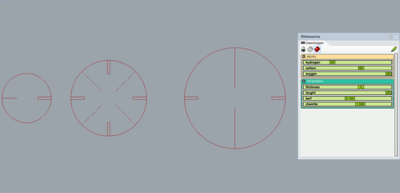
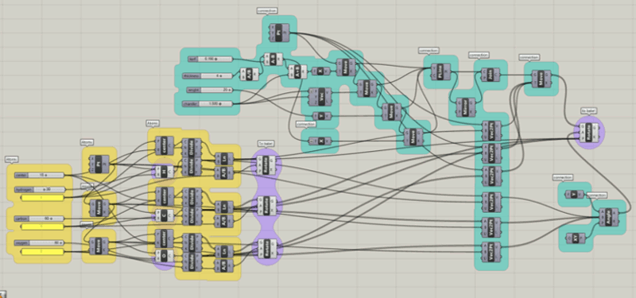
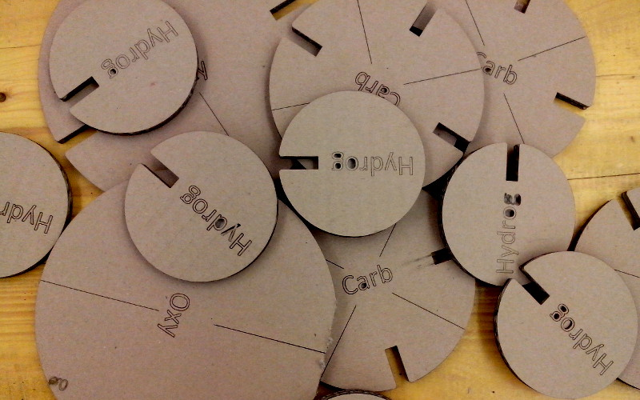
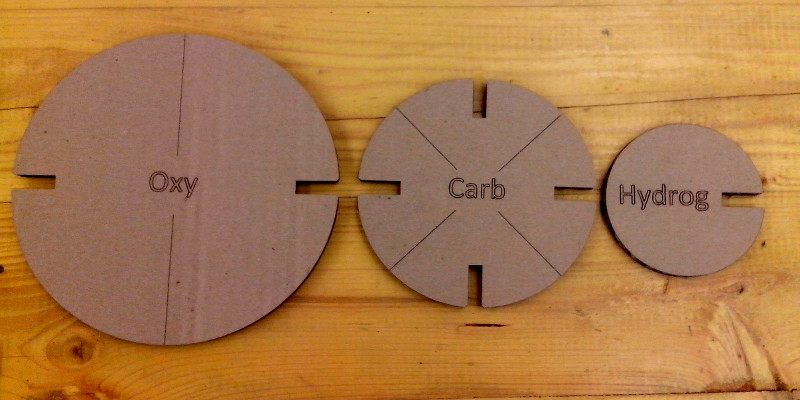
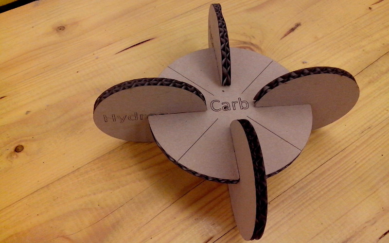
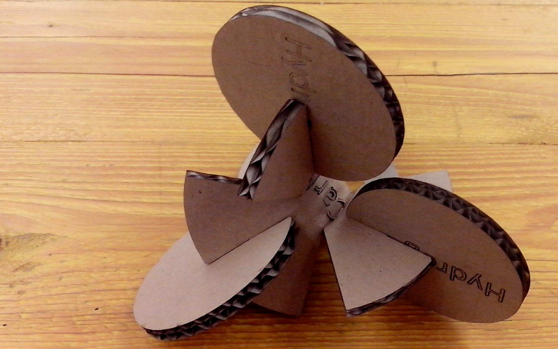
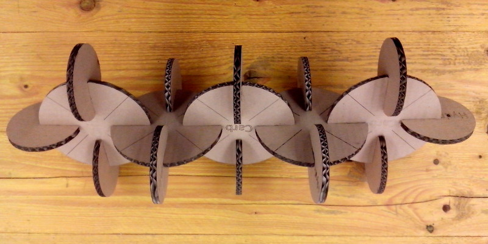

03. Computer-controlled Cutting
Lasercut project: the fab-Molecules
This is just an educational project: play with cartboard "atoms" to learn how they react to create molecules. The idea started based on the weekly exercise: "design a modular system, out of cardboard, with a parametric tool".
The fab-molecules are simple disks with a snap for each valence electron. To simulate the 3-dimensional structure that the molecule get after the reaction, the disc is divided into sectors, one each electron.
This is not always precise, but it helps to understand better the process.
The atoms are defined by a Grasshopper sketch, that allows to set kerf, thikness of the material, lenght of the joint, and dimension of the chamfer.

These are the most important parameters, to have and easy to align, resistant and durable snapfit. The chamfer goes from 0.5mm to 2mm, the thickness from 2mm to 7mm, the lenght of the joint from 10mm to 20mm, the kerf from 0.0mm to 0.3 mm. The kerf is actually the most sensitive one in this case, and it's been chosen between these two values because usually no lasercut should burn more than 0.3mm. This make sense if you're using a rigid material, with teh cartboard it's enough to use a smaller thickness then the real one.
Here the Grasshopper sketch. By default, only Hydrogen, Carbon and Oxygen are defined, but to add extra atoms, it's enough to change the number of valence electrons and the dimension.

Setting the lasercut
I put all the info for the machine in a tutorial online that I use during the lessons in the fablab and university. Being every lasercut different from each other i usually suggest to test the cutting parameters every times. In particular with cartboard the differences can be sensitive, maily because of the humidity absorbed by the cardboard and how planar is it. In our lasercutter there are 3 main parameters for the cut:
- Speed: it's described as a percentage of the maximum speed, equal to 2meter per second
- Power: it's a percentage of the maximum power, equal to 80W
- PPI: pulses per inch, it's related to the frequency of the laser (not the wave lenght) and it increase o reduce the power generated
In my case I used: power 100%, speed 4%, PPI 400
Here some pictures of modules.


Here the Metane, if rappresented 2-dimensional

Here the Metane, if rappresented 3-dimensional

Here a more complex hydrocarbon (the pentane)

Extra content
During our last user group "Visual Making" in the fablab Opendot we tested lasercut matrix for traditional printing process. Here three different ways to engrave the same picture and the different results.